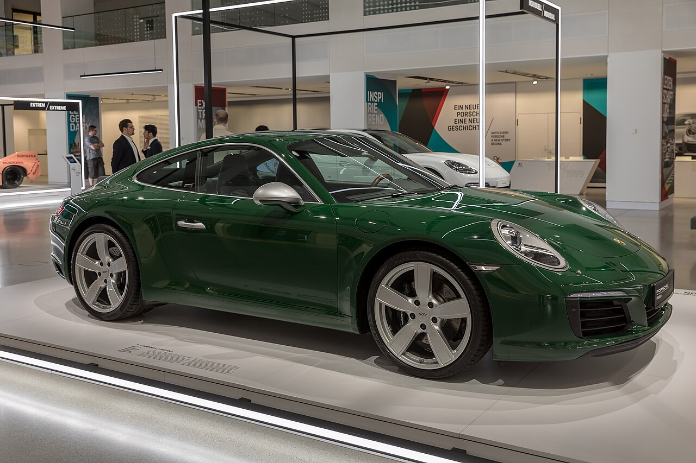

The Porsche 911 (pronounced Nine Eleven or in German: Neunelf) is a two-door 2+2 high performance rear-engined sports car introduced in September 1964 by Porsche AG of Stuttgart, Germany. It has a rear-mounted flat-six engine and originally a torsion bar suspension. The car has been continuously enhanced through the years but the basic concept has remained unchanged.[1] The engines were air-cooled until the introduction of the 996 series in 1998.[2][3] The 911 has been raced extensively by private and factory teams, in a variety of classes. It is among the most successful competition cars. In the mid-1970s, the naturally aspirated 911 Carrera RSR won world championship races including Targa Florio and the 24 Hours of Daytona. The 911-derived 935 turbo also won the 24 Hours of Le Mans in 1979. Porsche won the World Championship for Makes in 1976, 1977, 1978, and 1979 with 911-derived models. In a 1999 poll to determine the Car of the Century, the 911 was fifth.[4] It is one of two in the top five that had remained continuously in production (the original Beetle remained in production until 2003).[5] The one millionth example was manufactured in May 2017 and is in the company's permanent collection.[6]
.jpg)
.jpg)